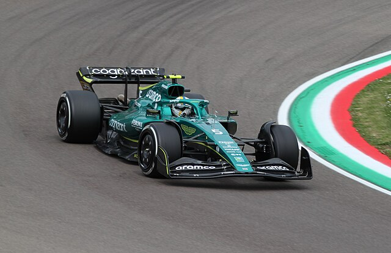

Gli ultimi due anni di carriera Vettel li passa all'Aston Martin, scuderia con un ambizioso progetto per il futuro, ma non ancora competitiva a tal punto da poter lottare per vincere. Infatti Seb si ritira con due dodicesimi posti nella classifica piloti, ma anche con il suo nome segnato nella storia della F1 come uno dei piloti più vincenti.
Statistiche 2020:
Statistiche 2021: